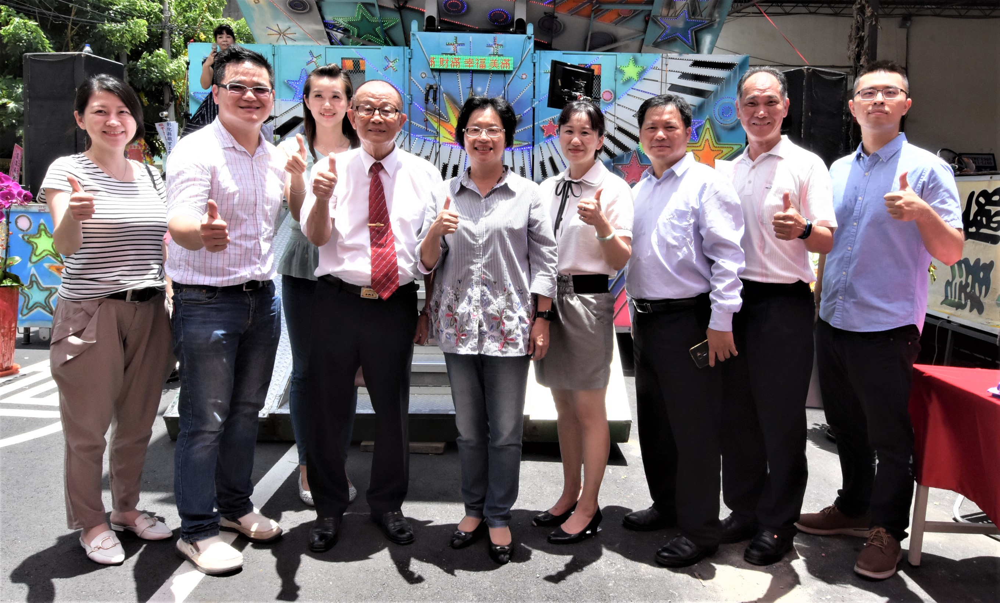
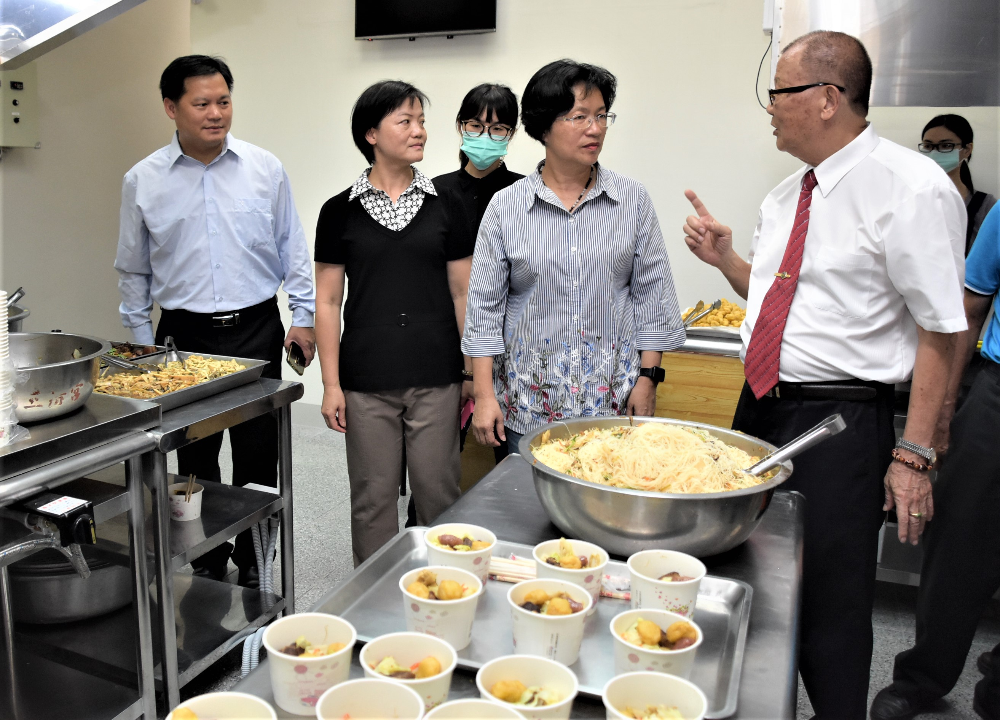

新聞內容 :
彰化縣職業工會總工會於28日上午在彰化市辭修路285號舉辦彰化技能培訓教室落成典禮暨職訓成果發表會，彰化縣長王惠美、勞動部勞動力發展署中彰投分署長林淑媛、彰化縣職業工會總工會理事長陳朝雄等人與會，王縣長期待縣府團隊和工會持續通力合作，建立最佳的夥伴關係，讓彰化經濟成長更繁榮，社會安定，勞工的權益與福祉獲得更進一步的保障，建構和諧的勞資關係，讓彰化更美、讓彰化更好。
王縣長說，這次職訓成果發表會作品琳瑯滿目，非常精采，感謝陳理事長長期對職訓課程培育的用心，縣府在108年共辦理15班職訓班，職前訓練訓後平均就業率達85%以上，縣府與彰化縣職業工會總工會合作辦理的職訓課程，訓練後的就業媒合率也在88%以上，成績斐然，讓受訓學員有機會找到好工作。
王縣長說，這次彰化技能培訓教室落成，最主要是希望學員能有好的學習環境，透過技能的培訓，民眾也能多一項一技之長，有了一技之長，要找工作就很方便，甚至有很多課程都與網路相關，隨著科技的時代來臨，AI與物聯網的速度很快，所以還是希望能將新的東西帶進訓練課程，讓鄉親提早接觸相關課程，立於不敗之地。
陳理事長說，彰化技能培訓教室落成主要有三間教室，要來辦理職業訓練，如果沒有適當的場地，沒有辦法去辦理訓練，這次還有動靜態的展出，並準備餐飲類讓大家來品嘗及了解。
與會貴賓還有彰化縣議員洪柏崴、彰化市長林世賢、縣府勞工處長吳蘭梅、彰化縣職業工會總工會榮譽理事長柯俊戎、職訓教師代表、各級民意代表、村里長、地方仕紳等人。
 